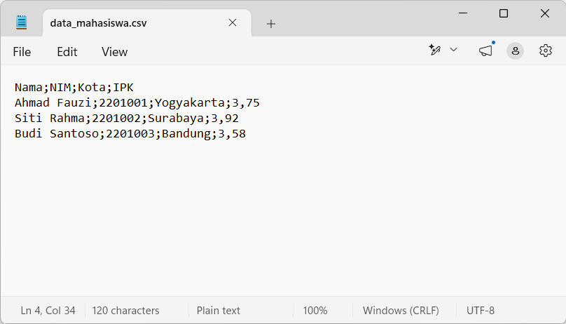
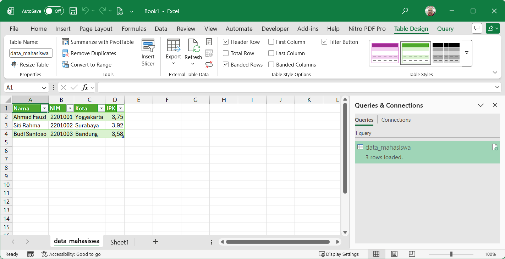

Teks Murni
CSV tidak menyimpan format, rumus, warna, atau gambar — hanya teks dengan pemisah. Karena itu ukurannya kecil dan mudah diproses program.
CSV (Comma-Separated Values) adalah format file teks murni yang
menyimpan data berbentuk tabel (baris dan kolom) dengan tanda pemisah tertentu,
umumnya koma (,) atau titik-koma (;). Karena isinya
teks biasa, CSV dapat dibuka dan diedit di aplikasi apa pun — dari
Notepad hingga Microsoft Excel — dan menjadi
jembatan paling umum untuk memindahkan data antar program dan sistem.
CSV tidak menyimpan format, rumus, warna, atau gambar — hanya teks dengan pemisah. Karena itu ukurannya kecil dan mudah diproses program.
Dibaca oleh Excel, Google Sheets, Python (pandas), R, basis data (SQL), hingga aplikasi ERP — menjadikannya format pertukaran data de facto.
Baris pertama biasanya berisi judul kolom (header), baris berikutnya berisi data. Tiap baris = satu record, tiap pemisah = batas kolom.
Struktur dasar file CSV beserta aturan penulisannya.
Nama;NIM;Kota;IPK Ahmad Fauzi;2201001;Yogyakarta;3,75 Siti Rahma;2201002;Surabaya;3,92 Budi Santoso;2201003;Bandung;3,58
📌 Baris pertama adalah header (judul kolom), tiga baris berikutnya adalah record data. Pada contoh ini pemisahnya titik-koma karena bilangan desimal memakai koma.
") digunakan bila nilai mengandung pemisah, tanda kutip, atau baris baru: "Nama, Gelar";2026.Nama ;IPK menghasilkan kolom berisi Nama .Pemisah kolom CSV ditentukan oleh konvensi regional (setting bahasa), bukan oleh isi datanya.
Di negara-negara berbahasa Inggris (dan Indonesia dengan setting regional
English (United States)), pemisah desimal adalah titik (3.75),
sehingga koma bebas dipakai sebagai pemisah kolom. Namun di Indonesia dan banyak
negara Eropa, pemisah desimal adalah koma (3,75).
Karena koma sudah dipakai untuk desimal, pemisah kolom dipindah ke
titik-koma (;) agar tidak bentrok.
Aturan praktis: pemisah desimal dan pemisah kolom tidak boleh sama. Jika desimal memakai koma → pemisah CSV adalah titik-koma. Jika desimal memakai titik → pemisah CSV adalah koma.
| Pemisah | Nama | Kapan Dipakai |
|---|---|---|
, | Comma | Setting regional Inggris (desimal titik); standar RFC 4180. |
; | Semicolon | Setting regional Indonesia/Eropa (desimal koma); default Excel versi lokal. |
(TAB) | Tab-delimited | Varian bernama TSV; umum di data bioinformatika & copy-paste dari Excel. |
| | Pipe | Data dengan banyak tanda baca; jarang, dipakai di industri tertentu. |
⚠️ Penting: Excel menyimpan dan membaca CSV mengikuti pengaturan
Regional Format di Windows (Control Panel → Region → Additional settings →
List separator). Pada Windows berbahasa Indonesia, list separator
default adalah titik-koma, sehingga Excel "versi Indonesia" membuat CSV dengan pemisah
titik-koma — bukan koma, meskipun ekstensinya .csv. Inilah sumber
kebingungan paling umum saat bertukar file CSV.
Langkah membuat file CSV dari nol hanya dengan Notepad (Windows).
Win + R, ketik notepad, lalu Enter. Atau klik kanan di folder tujuan → New → Text Document.
data_mahasiswa.csv (jangan data_mahasiswa.csv.txt).
✅ File siap. Buka dengan Excel atau editor teks lain untuk memeriksa hasilnya. Notepad menampilkan CSV apa adanya — sangat berguna untuk memastikan pemisah dan encoding benar.
Nama;NIM;Kota;IPK Ahmad Fauzi;2201001;Yogyakarta;3,75 Siti Rahma;2201002;Surabaya;3,92 Budi Santoso;2201003;Bandung;3,58

data_mahasiswa.csv di Notepad — data murni teks dengan pemisah titik-koma.⚠️ Notepad modern menyimpan UTF-8 tanpa BOM. Jika karakter seperti é, ü, atau simbol rupiah tampak berantakan saat dibuka di Excel, simpan ulang dengan Notepad sebagai UTF-8 with BOM, atau impor manual melalui Excel sambil memilih encoding UTF-8 (lihat bagian Impor).
Dua cara: buka langsung, atau impor terkontrol melalui Power Query.
.csv.
⚠️ Membuka langsung berisiko: angka 001 menjadi 1, tanggal 12/03/2026 ditafsir ulang, dan angka panjang berubah menjadi notasi ilmiah. Jika presisi data penting, gunakan Cara 2.
65001: Unicode (UTF-8)).
💡 Untuk kolom yang berisi pemisah desimal asing (mis. CSV dengan titik: 3.75), impor dulu sebagai teks, lalu ganti . menjadi , dengan Find & Replace, baru ubah tipenya menjadi number.

data_mahasiswa.csv di Excel — data menjadi tabel bernama data_mahasiswa (tab Table Design) dan tercatat sebagai query di panel Queries & Connections (3 rows loaded).Simpan lembar kerja sebagai CSV beserta peringatan yang perlu diketahui.
.xlsx. Jika ingin mempertahankan file Excel asli beserta formatnya, klik Don't Save.
| Format | Encoding | Pemisah | Catatan |
|---|---|---|---|
| CSV UTF-8 | UTF-8 (dengan BOM) | Mengikuti list separator regional (koma atau titik-koma) | ✅ Pilihan paling aman untuk teks berbahasa Indonesia dan lintas sistem. |
| CSV (Comma delimited) | ANSI/Windows lokal (mis. cp1252) | Mengikuti list separator regional | ⚠️ Karakter di luar code page lokal (mis. simbol tertentu) bisa rusak. |
| CSV (Macintosh) / (MS-DOS) | Varian lama | Mengikuti list separator regional | ❌ Hanya untuk kompatibilitas sistem lama. |
📌 Meski namanya "Comma delimited", pada Excel ber-setting Indonesia pemisah aktualnya adalah titik-koma. Periksa file hasil ekspor dengan Notepad untuk memastikan.
Hal-hal yang sering ditemui saat bekerja dengan CSV di Excel dan Notepad.
001 → 1): impor kolom sebagai Text, jangan General.03/04 bisa dibaca 3 April atau 4 Maret): format tanggal CSV tidak menyimpan informasi ambiguitas; tetapkan tipe kolom saat impor.2.2E+15 pada nomor panjang seperti NIK): atur kolom sebagai teks sebelum data dibaca..xlsx, dan hasilkan CSV hanya sebagai format tukar.Byte Order Mark — penanda kecil di awal file yang sering menjadi penyebab masalah encoding CSV.
BOM (Byte Order Mark) adalah penanda opsional berupa
urutan byte khusus di awal sebuah file teks yang memberi tahu
program pembaca bahwa file tersebut memakai encoding Unicode
tertentu. Untuk UTF-8, BOM berupa tiga byte:
EF BB BF (satu karakter U+FEFF). BOM bukan
bagian dari data — ia "meta-informasi" yang menempel di depan data.
Nama "Byte Order Mark" berasal dari perannya pada UTF-16/UTF-32: urutan byte menandai endianness (big-endian atau little-endian). Pada UTF-8 endianness tidak relevan, tetapi BOM tetap dapat ditulis dan dibaca sebagai penanda identitas encoding.
é, ü, huruf Arab, atau simbol) tampil rusak.\ufeffNama), sehingga perlu penanganan khusus.⚠️ Karena BOM tidak kasat mata, masalahnya sering baru muncul ketika file dibuka di aplikasi lain — jangan heran jika file "tampak normal" di Notepad tetapi rusak di Excel, atau sebaliknya.
| Situasi | Rekomendasi |
|---|---|
| CSV akan dibuka dengan Excel Windows oleh orang lain | Gunakan UTF-8 with BOM — paling aman. |
| CSV untuk diproses program (Python, database, API) | UTF-8 tanpa BOM lebih umum dan bersih. |
| Berkas ASCII murni (hanya huruf/angka dasar) | Tidak berpengaruh — BOM tidak diperlukan. |
| Data berisi karakter khusus (é, ü, emoji, aksara non-Latin) | Wajib konsisten; pilih UTF-8 (opsional ber-BOM sesuai target pembaca). |
# Lihat tiga byte pertama file (PowerShell)
Format-Hex data_mahasiswa.csv | Select-Object -First 1
# Ber-BOM : EF BB BF 4E 61 6D 61 ...
# Tanpa BOM : 4E 61 6D 61 3B ...
# Python: deteksi BOM
open('data_mahasiswa.csv', 'rb').read(3) == b'\xef\xbb\xbf'
🔤 Di Notepad: File → Save As → pilih Encoding: UTF-8 with BOM. Di VS Code: status bar encoding → Save with Encoding → UTF-8 with BOM.
Sumber yang mendasari panduan ini: standar resmi CSV dan dokumentasi resmi Microsoft.
text/csv — parameter charset dan header yang dapat digunakan aplikasi.